Despre serial
Ben 10 Classic este un serial american de animație lansat în 2005. Povestea îl urmărește pe Ben Tennyson, un băiat care găsește Omnitrixul, un dispozitiv extraterestru cu ajutorul căruia se poate transforma în zece extratereștri diferiți. Împreună cu verișoara sa Gwen și bunicul Max, Ben călătorește prin diferite locuri și întâlnește inamici periculoși.
Folosind puterile extratereștrilor din Omnitrix, Ben încearcă să protejeze oamenii și să oprească planurile celor care vor să pună mâna pe dispozitiv.
Ben 10
2005
Animație, acțiune, aventură, SF
Man of Action
Cartoon Network Studios
Ben, Gwen și Max
Episoade Ben 10 Classic
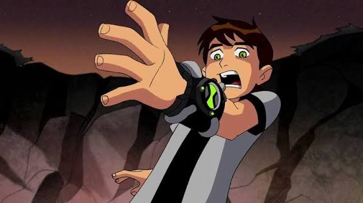
Și apoi au fost 10
În timpul unei excursii cu bunicul Max și Gwen, Ben descoperă Omnitrixul și află că poate deveni zece extratereștri diferiți.
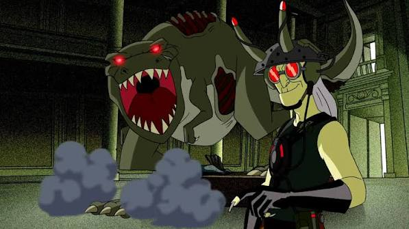
Washington Preistoric
Ben și familia sa ajung la Washington, unde întâlnesc o creatură misterioasă care provoacă probleme.
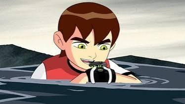
Kraken
Ben descoperă existența unei creaturi misterioase în apă și încearcă să afle ce se ascunde în spatele aparițiilor sale.
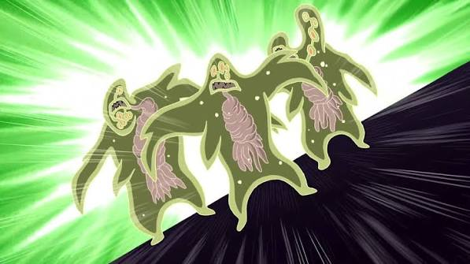
Pensionare permanentă
Ben, Gwen și Max întâlnesc un grup de bătrâni care ascund o surpriză neobișnuită.
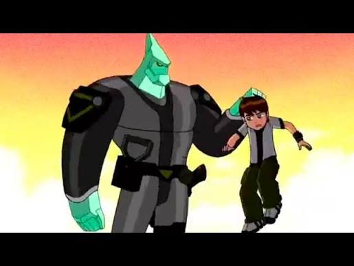
Vânătoarea
Ben ajunge în vizorul unor urmăritori care sunt interesați de puterile Omnitrixului.
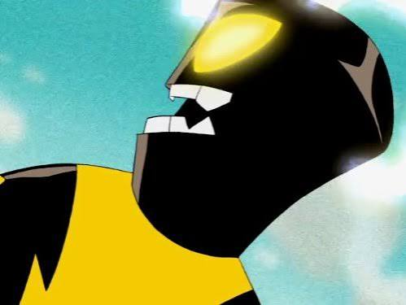
Capcana turistică
O oprire într-o zonă turistică se transformă într-o aventură neașteptată pentru Ben și familia sa.
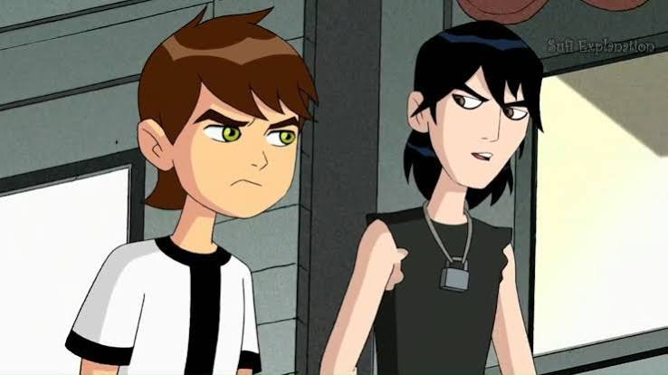
Kevin 11
Ben îl întâlnește pe Kevin, un băiat care poate absorbi energie și puteri. Prietenia lor se transformă într-un conflict periculos.
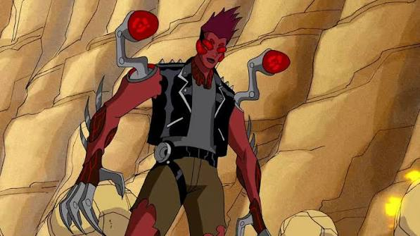
Alianța
Mai mulți vânători de recompense pornesc în urmărirea Omnitrixului, iar Ben trebuie să se apere.
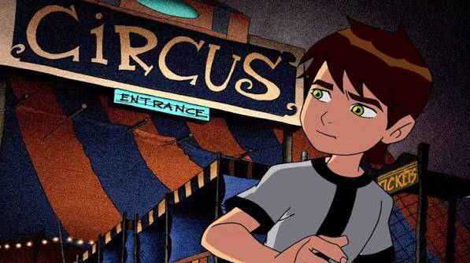
Cine râde la urmă
La un parc de distracții, Ben, Gwen și Max îl întâlnesc pe Zombozo, un clovn misterios care fură energia oamenilor.
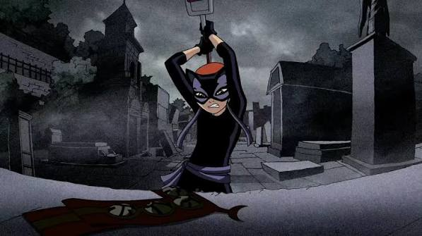
Norocoasa
Gwen găsește o carte de magie și începe să învețe vrăji, în timp ce Ben trebuie să-l oprească pe magicianul Hex.
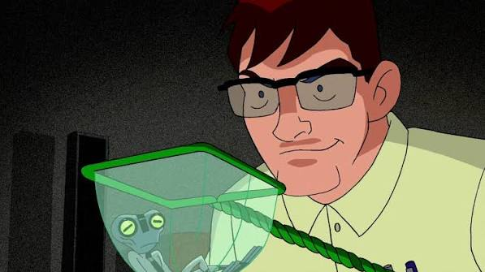
O problemă minoră
Omnitrixul se defectează și Ben rămâne blocat în forma lui Grey Matter, ajungând în mâinile unor oameni periculoși.
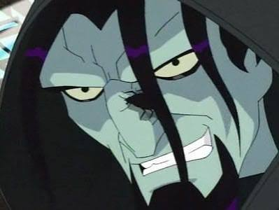
Efecte secundare
O răceală îi afectează transformările lui Ben, tocmai când trebuie să oprească un răufăcător care controlează insectele.
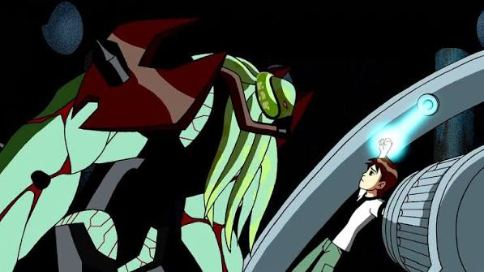
Secrete
Vilgax ajunge pe Pământ și îl capturează pe Ben pentru a recupera Omnitrixul. Gwen și Max încearcă să-l salveze.
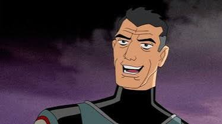
Adevărul
Ben, Gwen și Max îl întâlnesc pe Phil, un fost partener al bunicului Max, care folosește un dispozitiv periculos pentru a captura extratereștri.
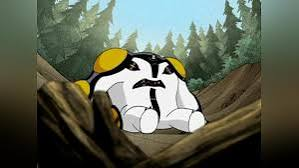
Cel Măreț
În Yellowstone, Ben descoperă o nouă transformare a Omnitrixului și trebuie să înfrunte o creatură uriașă care amenință zona.
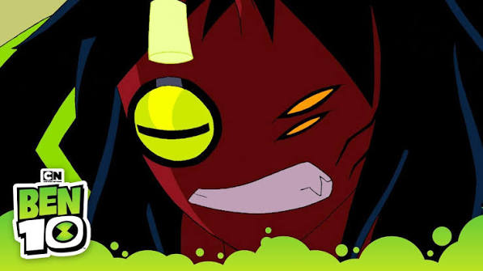
Înscenarea
Kevin își folosește puterile pentru a-l implica pe Ben într-o serie de probleme, făcându-l să pară vinovat.
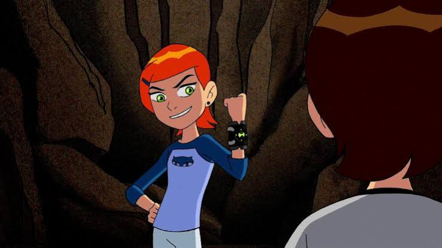
Gwen 10
Într-o realitate alternativă, Gwen găsește Omnitrixul în locul lui Ben și trebuie să învețe să-i folosească puterile.
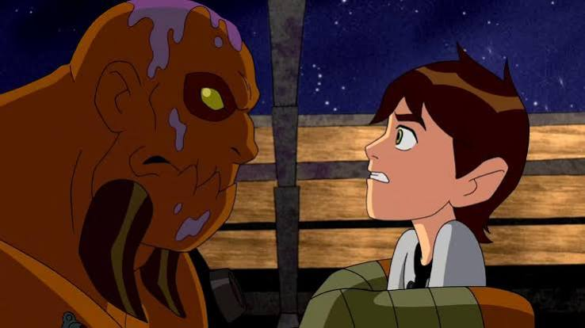
Combatanți Intergalactici
Ben și Kevin ajung pe o navă spațială unde sunt obligați să participe la lupte între adversari din diferite lumi.
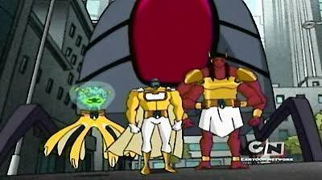
Echipa Forțelor Intergalactice
Ben întâlnește o echipă de supereroi extratereștri și ajunge să colaboreze cu ei împotriva unor adversari periculoși.
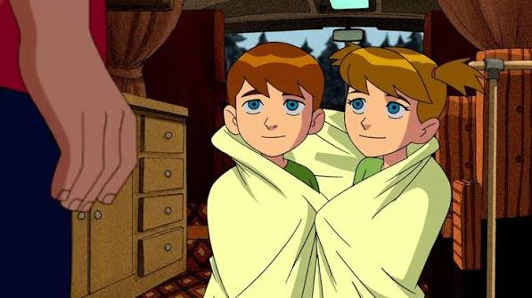
Tabăra Groazei
Într-o tabără de vară apar ciuperci extraterestre misterioase, iar Ben descoperă o nouă transformare a Omnitrixului.
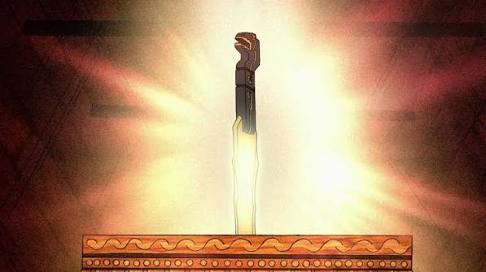
Arma Supremă
Ben, Gwen și Max pornesc în căutarea unei arme legendare, dar Cavalerii Eterni au propriile planuri.
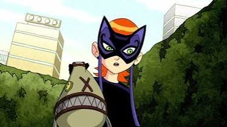
Ghinion
Gwen găsește un talisman magic care îi oferă noroc și puteri speciale, însă Hex și Charmcaster vor să-l obțină.
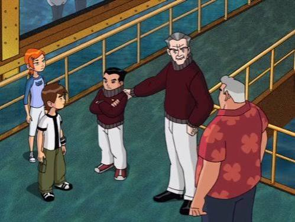
Secretul din adâncuri
Într-un complex subacvatic, Ben descoperă că o sursă de energie extraterestră a fost furată și folosită în scopuri periculoase.
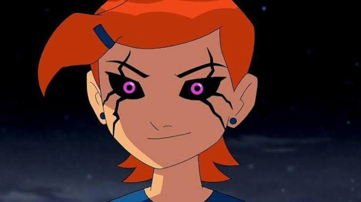
Speriat de stafie
Ghostfreak reușește să scape din Omnitrix, iar Ben trebuie să găsească o cale de a-l opri.
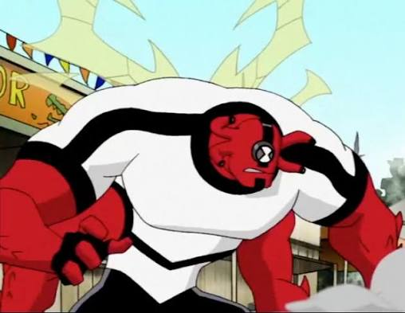
Dr. Animo și raza mutantă
Omnitrixul începe să funcționeze defectuos, iar Dr. Animo revine cu un nou plan care provoacă probleme.
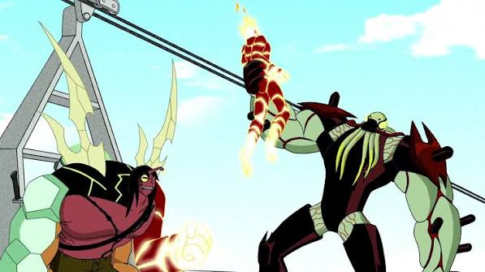
Răzbunarea
Ben și familia sa se confruntă cu o nouă amenințare, iar aventura îi pune din nou la încercare.
Personajele principale
Ben este însoțit în aventurile sale de verișoara Gwen și bunicul Max. Împreună înfruntă extratereștri, răufăcători și pericole neașteptate.
Ben Tennyson
Gwen Tennyson
Bunicul Max
Vilgax
Kevin 11
Puterea Omnitrixului
Omnitrixul este dispozitivul extraterestru care îi permite lui Ben să se transforme în diferite forme de viață. Fiecare transformare îi oferă abilități speciale, pe care Ben le folosește pentru a-și înfrunta adversarii și pentru a-și proteja prietenii.